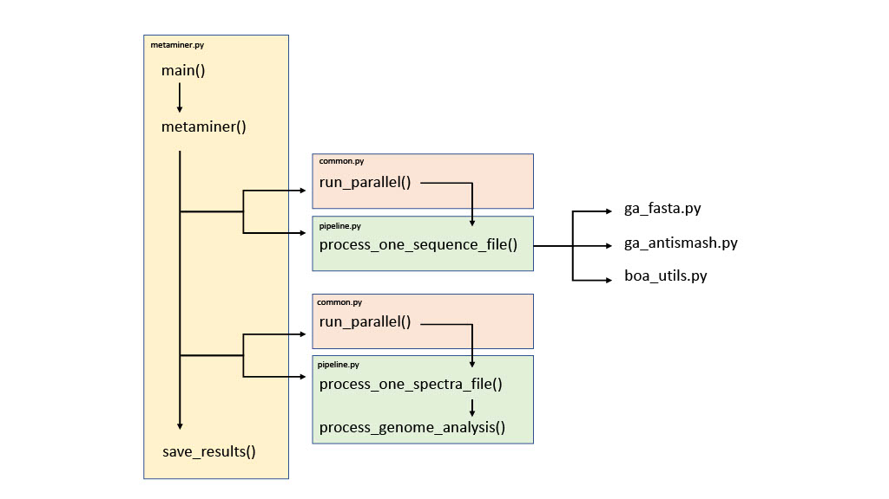

Results
3.1 MetaMiner
3.1.1 MetaMiner- STANDARD dataset
Three out of the six strains described in the paper were able to go through the genome analysis stage of the programme while the other three sequences failed at the genome analysis stage. Among the strains that were successfully analysed, none of them produced any significant match with the spectra. However, six peptides were reported in the MetaMiner paper, including 4 from P. marinus, 2 from G. thermodenitrificans and 1 from B. halodurans. To further investigate the matches, the peptides reported to have significant matches in the paper were manually queried against insignificant matches under the p-value threshold. One of the reported PP sequences from P. marinus was found to produce an insignificant match. The sequence was found to match with the same spectra file with 26 modification variations with the highest variation with a high p-value of 1.5E-03.
3.1.2 MetaMiner- ACTI dataset
The ACTI dataset contains three different strains of bacteria. The MetaMiner program accepts input either to be a path to a directory or a single file. Analysis was performed in two ways. Firstly a path to the directory containing all three fasta files was specified as the input and secondly three sequence files were processed as individual files in three separate runs. When three sequences were processed together, there were two peptides producing lantibiotic identified in S. roseosporous. However, when the fasta files were processed in separate runs, S. roseosporous only generated one match. The peptide only identified in the first analysis was reported in the MetaMiner paper while the peptide found when the nucleotide sequence was processed individually was not reported in the paper. The two matches have close p-values of 5.10E-12 and 7.60E-12, respectively.
3.1.3 MetaMiner- SPACE dataset
The SPACE dataset contains a total of 21 isolated strains. This dataset is the only dataset where sequence files were directly downloadable from the FTP links provided in the paper. The analysis was first performed with all sequences processed in one single command line run and no significant matches were produced. However, when the sequences were processed as individual runs, three significant matches were generated for Bacillus sp. JEM2 and ISSFR_3F. The three matches were identical with the same peptide sequence matching onto the same spectra files. Only one out of the three matches was reported in the MetaMiner paper. Additionally, a manual inspection was carried out to confirm the nucleotide sequences of Bacillus sp. JEM2 and ISSFR_3F are not identical.
Table 1. Strains of bacteria used for the evaluation of MetaMiner and results summary

3.1.4 Wrapper structure
The organisation of the wrapper of the MetaMiner pipeline was then analysed. The main metaminer.py script controls the main flow of the process and in this script, input files flow through three main stages sequentially. The stages include the processing of the sequence, spectra files and genome analysis (fig. 6). During the sequence processing stage, one of three scripts is called depending on the format of the input sequence file (fasta, antiSMASH output or BOA output). PSM are collected in the spectra processing stage. When there are multiple spectra or sequence files, the run_parallel function is called to allow simultaneous processing.
Figure 6. A high-level workflow of the MetaMiner pipeline. The main process is controlled by metaminer.py (yellow block). Where there are more than one input sequence/ spectrum file, the run_parallel() function is called for the organisation of simultaneous processing of those input data (orange blocks). In the the processing of sequence files, funcitons are organised in separate script depending on the format of the input file. The major sequential stages of the MetaMiner pipeline are sequence processing, spectra processing and genome analysis (green blocks).
3.2 NeuRiPP
3.2.1 Positive NeuRiPP predictions differ when classified by different neural network architectures
The same set of sequences identified by Prodigal was classified by NeuRiPP adopting three architectures. The linear CNN + lstm architecture classified more sequences as positive than just linear CNN across all classes of RiPP gene clusters. The parallel CNN classified similar numbers of sequences as positive to linear CNN + lstm for most classes except for prosteusin, microviridin, Linear azol(in)e-containing peptides (LAP), Radical S-adenosylmethionine (RaS) and bottromycin (Fig. 7). The positive predictions made by the linear CNN exhibit the least variation among all classes, with all values within +/- 2 standard deviation(391 +/- 127)(Tab S1). Notably, while the original analysis in the NeuRiPP paper reported that NeuRiPP classified near 90% of lanthipeptides as PP, there were only 2/1229 sequences classified as PP in this analysis.
Figure 7. Class distribution of positive predictions made by NeuRiPP. Three neural networks are presented in different colours. The neural network architectures used in this analysis are linear CNN (orange), parallel CNN (yellow) and linear CNN + lstm (green). (Hover over the bars and stay to see data entries.)
3.2.2 HMM hit rate in NeuRiPP positive and negative subsets + breakdown of NeuRiPP positive and HMM hit by class
The NeuRiPP sequences were subjected to HMMscan to assess their similarities to existing PPs. Results demonstrated that more sequences generated HMM hits than those that did not in both NeuRiPP positive and negative groups. While there were more NeuRiPP positives when linear and parallel CNN were used, linear CNN + lstm predicted more sequences as NeuRiPP negative (Fig. 8). Moreover, parallel CNN predicted the highest number of NeuRiPP positives that are also HMM hits.
Figure 9 shows the breakdown of NeuRiPP positive + HMM hit by class. Results classified by linear CNN + lstm and linear CNN exhibit a more similar distribution.
Linear CNN
Linear CNN + lstm
Parallel CNN
Figure 8. HMM results of NeuRiPP predictions. Results are divided into four categories: NeuRiPP positive (red), NeuRiPP positive + HMM hit (orange), NeuRiPP negative (green) and NeuRiPP negative + HMM hit (blue). (Hover over the segment and stay to see data entries.)